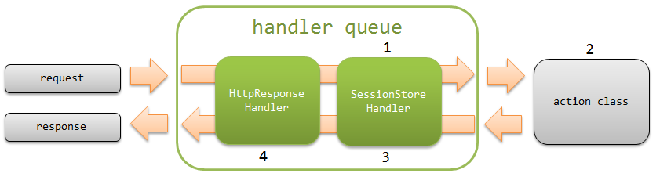

7.17. Session Store¶
Table of contents
- Function overview
- Module list
- Constraints
- How to use
- Configure for using session store
- Hold the input information between the input-confirm-complete screens
- Holds credentials
- Refer to the session variable value from JSP
- Customize the encryption configuration of the HIDDEN store
- Specify the transition destination screen when the value does not exist in the session variable
- Expansion example
- Features and selection criteria of session store
- How to manage the expiration date
Provides a function that abstracts the HTTP session.
This function issues session ID to identify the session,
and the session is tracked using the cookie (NABLARCH_SID (changeable)).
It provides a function called a session store for each session ID to read and write to a save destination.
The value read from and written to the session store for each session ID by this function is called a session variable.
Flow of a simple process is shown in the figure below.
- The request process of Session Variable Store Handler loads the session variable from the session store based on the session ID obtained from the cookie.
- Reads from/writes to session variable using SessionUtil from business action.
- The response process of Session Variable Store Handler saves the session variables in the session store.
- Configure session variable in request scope so that it can be referenced in JSP. (Do not configure if a value with the same name already exists in the request scope.)
Important
When using this function, the following functions are deprecated because of duplication of applications.
- hidden encryption
- Session Concurrent Access Handler
- API to access the session scope of ExecutionContext.
Tip
The cookie ( NABLARCH_SID ) used in this function is completely different from the JSESSIONID used for tracking the HTTP session.
Tip
Starting from Nablarch 5u16, you can choose the location for storing the expiration date of the session store other than HTTP sessions.
Tip
UUID is used for the session ID used in the cookie ( NABLARCH_SID ).
7.17.1. Function overview¶
7.17.1.1. Save destination of session variables can be selected¶
Save destination of the session variable can be selected according to the usage.
The following three types of stores are provided as standard.
For the features and selection criteria of the session store, see Features and selection criteria of session store.
Also, Redis can be used as a store destination by using Redis Store (Lettus) Adapter.
7.17.1.2. Serialization mechanism for session variable can be selected¶
The serialization mechanism when saving session variables in session store can be selected from the following. For details of each function, refer to the linked Javadoc.
7.17.2. Module list¶
<dependency>
<groupId>com.nablarch.framework</groupId>
<artifactId>nablarch-fw-web</artifactId>
</dependency>
<!-- Only when using DB store -->
<dependency>
<groupId>com.nablarch.framework</groupId>
<artifactId>nablarch-fw-web-dbstore</artifactId>
</dependency>
7.17.3. Constraints¶
7.17.3.1. Save target must Java Beans object that can be serialized¶
Object to be saved in the session store must be a serializable Java Beans object.
The property type of the object must be a Java basic type or a Java Beans object that can be serialized. Arrays and collections can also be used for properties.
7.17.4. How to use¶
7.17.4.1. Configure for using session store¶
To use session store, configure SessionManager in the component definition in addition to configuring Session Variable Store Handler.
The following is a configuration example when all the save destinations provided as standard are used.
<!-- Configure with the component name "sessionManager" -->
<component name="sessionManager" class="nablarch.common.web.session.SessionManager">
<!--
Store name used by default if a save destination is not specified explicitly
-->
<property name="defaultStoreName" value="db"/>
<!-- Add components according to the save destination used in the application -->
<property name="availableStores">
<list>
<!-- HIDDEN store -->
<component class="nablarch.common.web.session.store.HiddenStore">
<!-- See Javadoc for details of the configuration value -->
</component>
<!-- DB store -->
<component-ref name="dbStore" />
<!-- HTTP session store -->
<component class="nablarch.common.web.session.store.HttpSessionStore">
<!-- See Javadoc for details of the configuration value -->
</component>
</list>
</property>
</component>
<component name="dbStore" class="nablarch.common.web.session.store.DbStore">
<!-- See Javadoc for details of the configuration value -->
</component>
<!-- DB store initialization configuration -->
<component name="initializer"
class="nablarch.core.repository.initialization.BasicApplicationInitializer">
<property name="initializeList">
<list>
<!-- Other components are omitted -->
<component-ref name="dbStore" />
</list>
</property>
</component>
When using DB store, a table must be created in the database to store the session variables.
The definition of the table to be created is shown below.
- USER_SESSION table
Column name Data type SESSION_ID(PK) java.lang.String SESSION_OBJECT byte[] EXPIRATION_DATETIME java.sql.Timestamp
SESSION_ID should be defined as VARCHAR instead of CHAR as it may not work properly in Oracle.
The table name and column name can be changed. To change, define the components of UserSessionSchema to DbStore.userSessionSchema.
<property name="userSessionSchema">
<component class="nablarch.common.web.session.store.UserSessionSchema">
<!-- See Javadoc for details of the configuration value -->
</component>
</property>
Tip
When DB store is used, session information may remain in the table when the browser is closed. Therefore, expired session information must be deleted regularly.
7.17.4.2. Hold the input information between the input-confirm-complete screens¶
To retain the input information between the input-confirm-complete screen, use the session store depending on whether screen operations on multiple tabs are allowed.
- When screen operations on multiple tabs are not allowed
- Hold session variables in a table on the database using the DB store.
- When screen operations on multiple tabs are allowed
Hold session variables in the client using HIDDEN store.
When using HIDDEN store, use hiddenStore tag in JSP of input/confirmation screen as shown below.
<n:form> <!-- Configure the value of parameterName property of HiddenStore defined in the component configuration file to the name attribute --> <n:hiddenStore name="nablarch_hiddenStore" /> <!-- Other tags are omitted --> </n:form>
Implementation example of session store between input-confirm-complete is shown below.
Tip
Object (Entity) for executing business logic should be stored in the session store instead of Form.
By storing Entity, business logic can be executed immediately with the object acquired from the session store. As a result, unnecessary processes can be prevented from being mixed in the business logic, and enhancement of cohesiveness at the source can be expected.
On the other hand, storing a Form increases the possibility that a tightly coupled source will be created by inducing the passing of data by the Form and incorporating unnecessary data conversion processing in the business logic.
Form needs to be validated as it accepts external input values, but before validation, Form is in a state of holding unreliable values. Therefore, from the security perspective, since data stored in the session store will have a long lifetime, the goal is also to retain the safest data possible and reduce the risk of embedding vulnerabilities.
7.17.4.3. Holds credentials¶
Use DB store to retain credentials.
Implementation example of session store during login/logout is shown below.
- Login to the application
// Delete existing session store before login SessionUtil.invalidate(ctx); // Save login user information in session store SessionUtil.put(ctx, "user", user, "db");
- Logout from the application
// Invalidate the entire session store SessionUtil.invalidate(ctx);
7.17.4.4. Refer to the session variable value from JSP¶
The value of session variable held in the session store can be referenced from JSP using the same procedure as the normal request scope and session scope.
Important
If a value with the same name already exists in the request scope, the value of the session variable cannot be referenced from JSP. Therefore, configure a name that does not overlap with the request scope in session variable.
7.17.4.6. Specify the transition destination screen when the value does not exist in the session variable¶
Session variables always exist in normal screen transitions, but in some cases, session variables that originally existed may not be accessible due to incorrect screen transitions being performed using the back button of the browser. Since an exception indicating that the session variable does not exist ( SessionKeyNotFoundException ) is thrown, transition to an arbitrary error page is possible by catching this exception.
The realization method is shown below.
- Transition to a common error page in the system
When transitioning to a common error page in the system, catch the exception in the handler and specify the transition destination.
- Implementation examples
public class SampleErrorHandler implements Handler<Object, Object> { @Override public Object handle(Object data, ExecutionContext context) { try { return context.handleNext(data); } catch (SessionKeyNotFoundException e) { // Catches the exception indicating that the session variable does not exist // and returns the error page indicating the incorrect screen transition throw new HttpErrorResponse(HttpResponse.Status.BAD_REQUEST.getStatusCode(), "/WEB-INF/view/errors/BadTransition.jsp", e); } } }
- Specify the transition destination for each request
When switching the transition destination for each request, specify the transition destination using OnError Interceptor. Note that the transition destination can be changed for only some of the requests by using it together with the transition to a common error page in the system mentioned above.
- Implementation examples
// Specify the transition destination for each request // by specifying the exception indicating that the session variable does not exist // in the target exception @OnError(type = SessionKeyNotFoundException.class, path = "redirect://error") public HttpResponse backToNew(HttpRequest request, ExecutionContext context) { Project project = SessionUtil.get(context, "project"); // Process is omitted }
7.17.5. Expansion example¶
7.17.5.1. Add the save destination of session variables¶
The following steps are required to add the save destination for session variables.
- Create a class by inheriting SessionStore for supporting the save destination to be added.
- Add the component definition of the created class to SessionManager.availableStores.
7.17.6. Features and selection criteria of session store¶
The save destination of session variables that can be used by default is as follows.
- DB store
Save destination: Database tableFeatures: - Session variables can be restored even if the application server is stopped due to rolling maintenance.
- Does not squeeze the heap area of the application server.
- If the processing of the same session is executed by multiple threads, (the one written last takes precedence. (Data of previously saved session will be lost)
- HTTP session store
Save destination: Application server heap area(depending on the application server configuration, it may be saved in a database or file.)Features: - It is suitable for holding information such as credentials that are frequently used in the entire application.
- Since information is maintained on a per AP server basis, ingenuity is required when performing scale-out.
- Saving a large amount of data such as the input contents of the screen may burden the heap area.
- If the processing of the same session is executed by multiple threads, it will written later. (Data of previously saved session will be lost)
Based on the above, the selection criteria for each session store are shown below.
| Application | Session Store |
|---|---|
| Hold input information between input-confirm-complete screens (screen operations on multiple tabs not allowed) | DB store |
| Hold input information between input-confirm-complete screens (screen operations on multiple tabs allowed) | HIDDEN store |
| Hold credentials | DB store or HTTP session store |
| Hold the search conditions | Not used [1] |
| Hold the search results list | Not used [2] |
| Hold screen display items such as select boxes | Not used [3] |
| Hold error message | Not used [3] |
| [1] | Except for credentials, the session store is not intended to hold data spanning multiple functions. Design and implement the session store according to the requirements of the application, such as holding the URL in the local storage of the browser for search. |
| [2] | Large amounts of data such as list information may burden the storage area, so do not store it in the session store. |
| [3] | (1, 2) Values used for screen display can be transferred using the request scope. |
Tip
As for Redis Store (Lettus) Adapter, its features are the same as the DB store, only the destination is different.
7.17.7. How to manage the expiration date¶
Session expiration date is stored in an HTTP session by default. You can store the session expiration date in the database by changing the setting.
See Save the expiration date in the database for details.
Also, the expiration date can be stored in Redis if using Redis Store (Lettus) Adapter.
Tip
See Making Web Applications Stateless for the significance of storing the expiration date in the database.